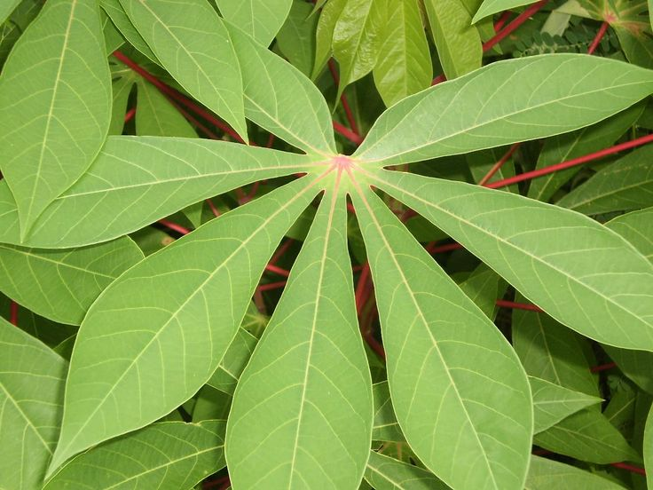
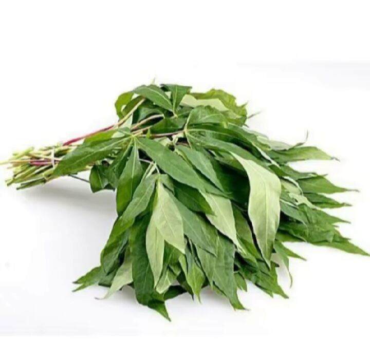
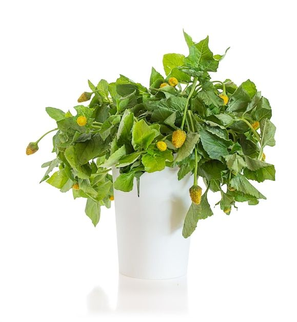

BRED MORINGA – 2,35€/kg
La brède moringa est un légume-feuille provenant de l’arbre Moringa oleifera, cultivé dans les régions tropicales comme Mayotte. Elle est consommée fraîche, cuite, sautée ou séchée en poudre pour agrémenter sauces et plats.
Origne : Mayotte

BRED MANIOC – 1,35€/kg
Les jeunes feuilles du manioc sont très présentes dans la cuisine mahoraise. Elles sont souvent bouillies, sautées ou mijotées en sauce. Leur goût doux, légèrement amer, est très apprécié.
Origne : Mayotte

BRED FEUILLE DE PATATE DOUCE – 1,50€/kg
Les feuilles de patate douce sont très nutritives et utilisées comme brèdes à Mayotte. Elles se cuisinent sautées, en bouillon ou au lait de coco.
Origne : Mayotte

BRED MAFANE – 2,35€/kg
Connues pour leur goût légèrement piquant et anesthésiant, les brèdes mafane sont très populaires dans l’océan Indien et souvent cuisinées en bouillon ou sauté.
Origne : Mayotte